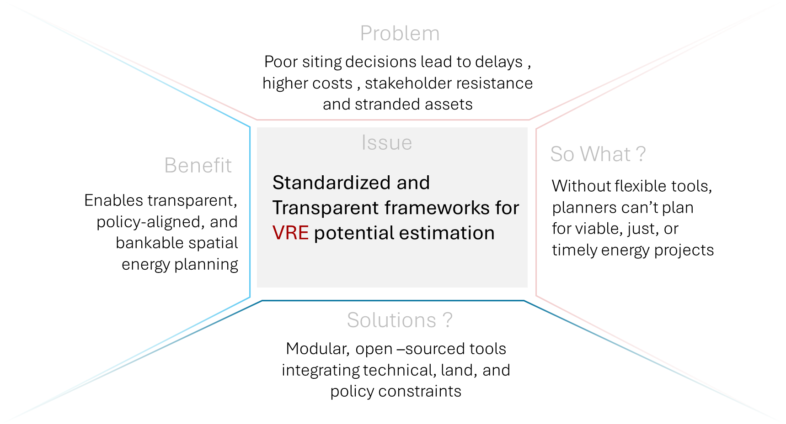
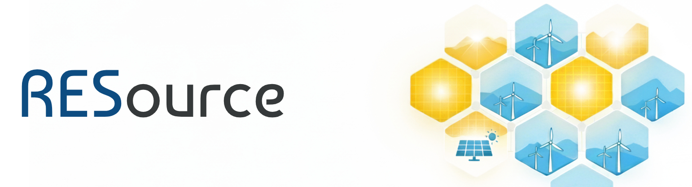
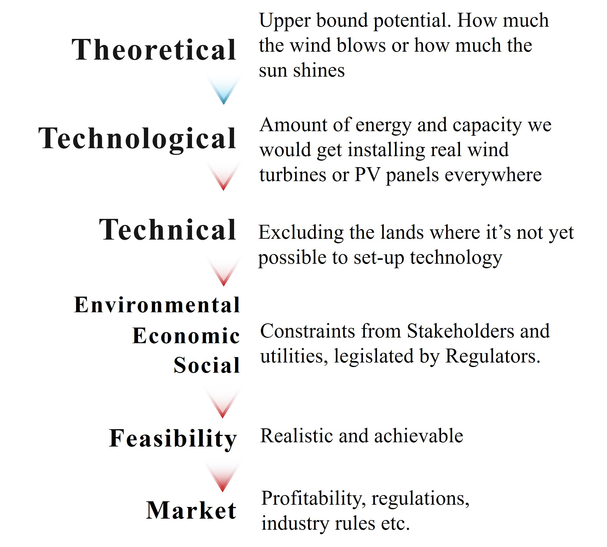
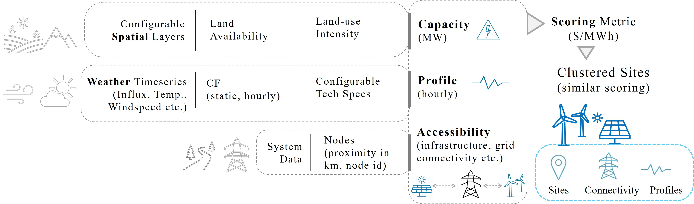

One of the many solutions ?

A Modular and Transparent Open-Source Framework for Sub-National Assessment of Solar and Land-based Wind Potential.
Warning
This library is under active development.
RESource is developed to enable reproducible, adaptable assessments of VRE potential that are sensitive to local constraints and planning priorities. We developed a structured, modular workflow that integrates geospatial, temporal, economic, and regulatory data to evaluate site suitability for solar and wind energy development. This structured methodology ensures transparency and transferability, allowing RESource to be adapted for different regions and scaled for long-term strategic energy planning.

Workflow overview#

🚀 Quick Start#
RESource Quickstart Guide#
Get up and running with RESource - A modular framework for renewable energy resource assessment.
🚀 Quick Setup#
Prerequisites#
Linux environment (Linux, macOS, or Windows WSL2)
Git and Conda/Miniconda installed
Python 3.12+ support
2️⃣ One-Command Setup#
# Create complete conda environment
make setupenv
3️⃣ Activate & Test#
# Activate environment
conda activate RESource
# Quick test
python -c "import RES; print('✅ RESource ready!')"
🎉 You're ready to go!
4️⃣ Download Case Study Data#
# Download required data for Canadian analysis (~2GB)
# Visit and download: https://zenodo.org/records/16658067
# Extract to data/ directory
wget https://zenodo.org/record/16658067/files/RESource_data.zip
unzip RESource_data.zip -d data/
Note
Case Study Data: Contains processed geospatial data for Canadian provinces including ERA5 weather data, exclusion zones, and land cover classifications needed for renewable energy resource assessment.
5️⃣ Setup API Access (For Custom Analysis)#
Warning
Required for Custom Regions: Skip this step if only using the provided case study data.
For running custom analyses beyond the provided case study data, some data sources require API registration:
ERA5 Climate Data: Requires Copernicus Climate Data Store registration for global weather data
CODERS API: Requires registration for Canadian-specific data sources
Note
Complete Setup Instructions: For detailed API registration steps, configuration files, and data source information, see data.md.
🔥 First Run#
Run Analysis Pipeline#
Enhanced run.py Script - Flexible region selection with colored output:
Command |
Description |
|---|---|
|
Run Canadian analysis (all provinces) |
|
Run Western Balkans analysis (all regions) |
|
Run specific regions only |
|
Show all available options |
Key Features:
✅ Smart Region Detection: Automatically reads available regions from config
✅ Validation: Invalid regions show available options with suggestions
✅ Colored Output: Error messages, warnings, and progress in colors
✅ Flexible Selection: Process all regions or specify subset
Command Line Options#
Option |
Short |
Description |
Example |
|---|---|---|---|
|
- |
Configuration file path (required) |
|
|
|
Specific regions to process |
|
|
|
Show help message |
|
Example Workflows#
# Canadian Analysis
python3 run.py config/config_CAN_baseline.yaml # All Canadian provinces
python3 run.py config/config_CAN_baseline.yaml -r BC QC AB # Specific provinces only
# Western Balkans Analysis
python3 run.py config/config_WB6.yaml # All WB6 countries
python3 run.py config/config_WB6.yaml -r AL BA # Albania & Bosnia only
# Error Handling Examples
python3 run.py nonexistent.yaml # Shows available configs
python3 run.py config/config_WB6.yaml -r INVALID # Shows valid regions
the 'RES' conda environment activated while you run this script.
📊 What RESource Does#
RESource analyzes renewable energy potential by:
📍 Site Selection: Filters suitable land using exclusion zones, slopes, land cover
🌤️ Weather Processing: Converts ERA5 climate data to energy capacity factors
⚡ Capacity Estimation: Calculates wind/solar potential per grid cell
📈 Time Series Generation: Creates hourly profiles for energy system modeling
🎯 Optimization: Selects optimal sites based on capacity and cost criteria
Output Organization:
data/store/: Primary resource data (HDF5 format) - detailed analysis resultsresults/Country/Region/Scenario/: Organized CSV files - resource clusters, timeseries, and cost-filtered sitesvis/Country/Region/: SVG/PNG visualizations - maps, supply curves, clustering analysis, and policy scenarios
Example Output#
data/store/
├── resources_Canada_BC_BASELINE.h5 # resource data store for BASELINE
results/Canada/BC/BASELINE/
├── resource_options_wind_British Columbia.csv # Wind resource clusters with LCOE
├── resource_options_wind_British Columbia_timeseries.csv # Hourly capacity factors
├── resource_options_solar_British Columbia.csv # Solar resource clusters with LCOE
├── resource_options_solar_British Columbia_timeseries.csv # Hourly capacity factors
├── cells_aggregated_by_Region_BC_BASELINE.csv # Regional capacity summaries
├── wind_cells_below_50_$pMWh_BC_BASELINE.csv # Cost-filtered wind sites
├── solar_cells_below_57_$pMWh_BC_BASELINE.csv # Cost-filtered solar sites
└── Resource_options_summary.txt # Analysis summary report
vis/Canada/BC/
├── BC_gridcells_outline.svg # Grid cell boundaries
├── BC_regions.png # Administrative regions
├── supply_curve_baseline_vs_policy_BC.svg # Supply curve comparisons
├── Resources_proximity_to_grid_BC.svg # Grid connectivity analysis
├── BASELINE/
│ ├── Resources_combined_CAPACITY.svg # Combined capacity maps
│ ├── Resources_combined_CF.svg # Capacity factor maps
│ ├── Resources_combined_SCORE.svg # Resource quality scores
│ ├── wind/
│ │ ├── Regional_cluster_Elbow_Plots/ # Clustering analysis plots
│ │ └── lands/ # Land availability analysis
│ └── solar/
│ ├── Regional_cluster_Elbow_Plots/ # Clustering analysis plots
│ └── lands/ # Land availability analysis
└── strict_policy_aeroway_CPCAD_buffer/ # Alternative policy scenario
├── cost_map_wind.svg # Cost mapping visualizations
├── cost_map_solar.svg
└── potential_capacity_lost_*.svg # Policy impact analysis
📁 Key Files & Structure#
RESource/
├── config/ # Configuration files
│ ├── config_CAN.yaml # Canadian analysis setup
│ └── config_WB6.yaml # Western Balkans setup
├── RES/ # Core analysis modules
├── notebooks/ # Interactive examples
├── run.py # Main analysis script
├── data/
│ └── store/ # Main resource data storage (HDF5)
├── results/ # Downstream modeling exports (CSV)
└── vis/ # Visualizations & plots
🛠️ Common Commands#
make help # Show all available commands
make setupenv # Create/setup conda environment
make updateenv # Update existing environment
make run # Run main analysis
make jupyter # Start Jupyter Lab
make docs # Build documentation
make clean # Clean cache & build files
🌍 Supported Regions#
🇨🇦 Canada: Provincial analysis (BC, AB, SK, ON, QC, NS, MB)
🌍 Western Balkans: Regional analysis (6 countries)
🔧 Custom: Configure any region with your own data
📚 Next Steps#
Explore Examples#
Try the playground notebooks#
notebooks/resources_playground_CAN.ipynb
Build Documentation#
# Generate full documentation
make docs
# Live development server
make autobuild # Visit http://127.0.0.1:8000
🆘 Need Help?#
Quick Debugging#
# Check environment
conda activate RESource && python -c "import RES"
# Test all dependencies
python workflow/scripts/test_venv.py
# Check data store (look for resources_Canada_*_BASELINE.h5)
ls -la data/store/resources_Canada_*
# View recent outputs - organized by Country/Region/Scenario
ls -la results/Canada/BC/BASELINE/
ls -la vis/Canada/BC/BASELINE/
# Check visualization files
find vis/Canada/BC/ -name "*.svg" -o -name "*.png" | head -10
Resources#
📖 Full Documentation: https://deltae.github.io/RESource/
🐛 Issues: GitHub Issues
💬 Discussions: GitHub Discussions
🔍 Troubleshooting#
Problem |
Solution |
|---|---|
|
Run |
|
Run |
|
Download case study data from Zenodo |
|
Run |
Slow downloads |
Check internet connection, try different mirror |
Still Need Help?#
If you encounter issues not covered above, you can reach out to the development team:
Tip
Contact the Developer: For direct assistance, see contact information in developers.md or open an issue on GitHub.
🎯 Ready to analyze renewable energy resources? Run make run and explore the results!
Tip
For more detailed setup and development information, see the Complete Setup Guide.
Tip
Ready to dive deeper? Check out the Complete Setup Guide or explore the BC Case Study for detailed examples.
Contents:
Notebooks:
for Developers: